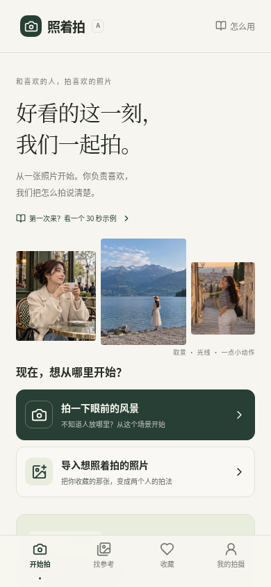
选一张照片
眼前有好看的风景？点「拍一下眼前的风景」。
收藏过想拍的照片？点「导入想照着拍的照片」。
给拿手机的人，也给镜头前的人。
从一张照片开始，找到你们共同喜欢的画面。
你不需要先学参数，也不用把所有开关都试一遍。

眼前有好看的风景？点「拍一下眼前的风景」。
收藏过想拍的照片？点「导入想照着拍的照片」。
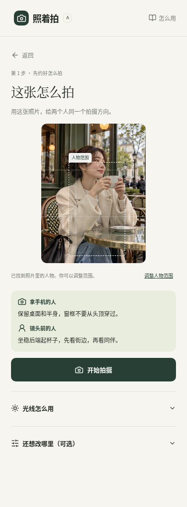
拿手机的人看取景提示，镜头前的人看站位与动作。
光线和更多调整可以稍后再看。
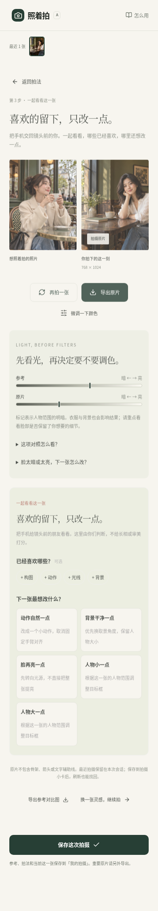
先拍一张。喜欢就导出；还想调整，就只改一个地方。
下一张直接继续拍，不用重新选参考。
首页点「第一次来？看一个 30 秒示例」，跟着湖边示例点三步。示例不会打开相机，也不会把你的照片发送给 AI。
在首页点「拍一下眼前的风景」，再拍一张或选择已有照片。尽量带上地面，别只拍天空。
点「让 AI 看看怎么拍」，确认后才发送缩小的场景图。如果页面提示暂未开启，点「不发送，我自己选站位」继续。
「人景平衡」适合先试一张；「多留风景」把人拍小一点；「突出人物」让人更醒目。虚线框会跟着变化。
虚线框表示画面里的位置，不代表现实中的距离。确认地面平坦、可以站，再点「开始拍摄」。
人在虚线框里时，先看头顶和脚边有没有空间；再看地平线有没有穿过脖子。
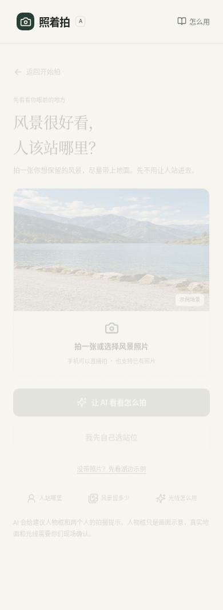
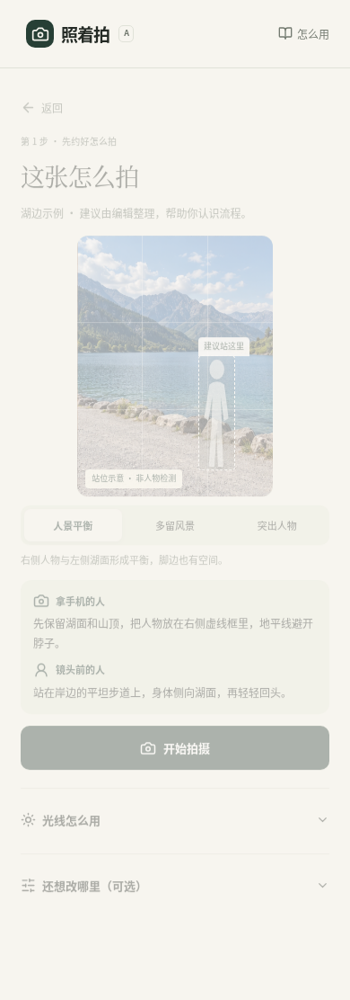
右图为内置湖边示例的拍法，明确标为示例。你上传的照片不会自动套用这份答案。
构图、动作、光线，不用全都复刻。先留下你最喜欢的部分。
咖啡馆、书店、街头、建筑、公园、湖边、雨夜。点开图片，就能看两个人分别怎么做，以及需要什么条件。
复刻偶像、经典照片的动作、场景与构图。先看图片出处与地点状态。地点未确认时先借动作；不用等到同一个地方才能拍。
看到的是画作原图。先借回头的轮廓、窗边光或托腮的动作，衣服与道具都可以按自己的条件来。
在「找参考」点图片 → 看拍法 → 点「照着这张拍」。
点爱心收藏，下一次从「收藏」回来。
首页点「导入想照着拍的照片」。自动确认人物后就能开始；没找到人物时，点「调整人物范围」框一下照片里的人。
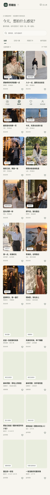
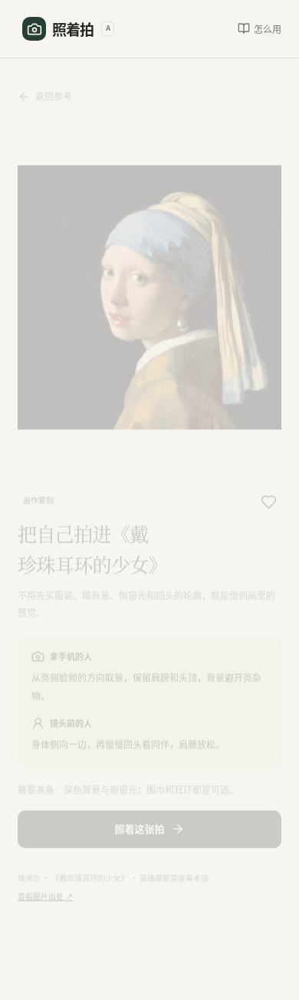
按提示靠近或后退，调整取景，让对方落进目标框。先把画面框好，再引导动作。不要让对方和你同时挪来挪去。
箭头表示人物在画面里要靠哪边，不是让手机朝哪边移动。先在舒服的位置站稳，等同伴调好取景，再回头、整理袖口或轻轻转身。可以放弃不舒服的姿势。
点「开始拍摄」后，两个人先看一眼提示。手机已经在拍摄者手上，就点「我拿手机，打开相机」。允许浏览器使用相机。
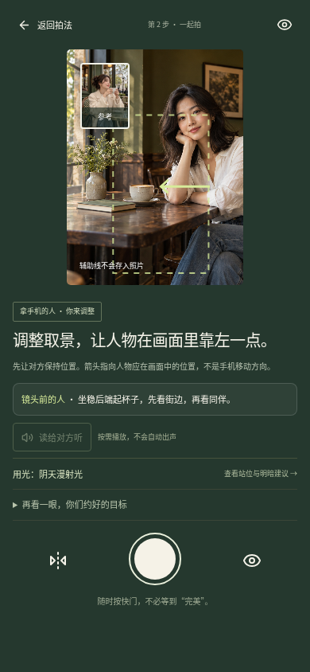
虚线框 · 建议人物范围
读给对方听 · 点了才播放语音
大圆按钮 · 拍下这一张
左上角 · 返回拍法，照片保留
相机截图用参考照片演示界面；实拍时，这里显示你的实时相机画面。辅助线不会存进原片。
光影一直在。它放在「光线怎么用」里，需要时展开。
打开「光线怎么用」，选择窗边、阴天、树影、落日、夜景等条件。没有落日，就先用眼前的阴天光，构图仍然可以保留。
用光图是俯视示意：光源、人物和手机分别在什么方向。按真实现场调整，不用寻找精确米数。
脸太暗，先稍转向窗户或明亮天空。背景太杂，拿手机的人左右挪一点，避开头后的杂物。
脸稍转向窗
避开头顶暖灯
眼睛留在完整亮区
不直视太阳
太阳在肩膀斜后方
先检查脸部细节
衣服、道具、相机参数都可以晚一点考虑。先把脸的光和背景整理好。
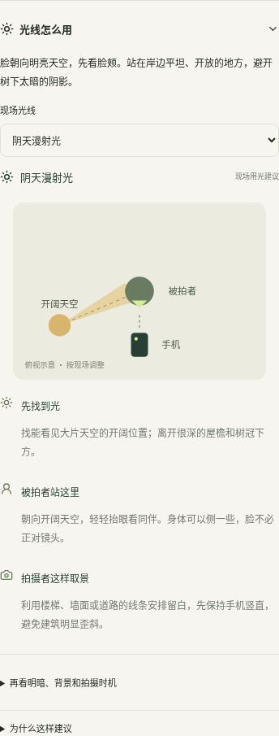
结果页往下看「下一张只改一点」。构图、动作、光线、背景，喜欢的可以勾选保留。
比如「动作自然一点」「背景干净一点」「脸再亮一点」，或让人物小一点、大一点。
点「只改这一点，继续拍」。会带着刚才的参考回到相机；不会重新让你选照片。
已经选了「保留光线」，又选「脸再亮一点」？页面会提醒你。先取消保留光线，或者换一个想改的地方。
直接点「再拍一张」。最近 6 张能在页面顶部切换，每张都保留当时用的拍法。
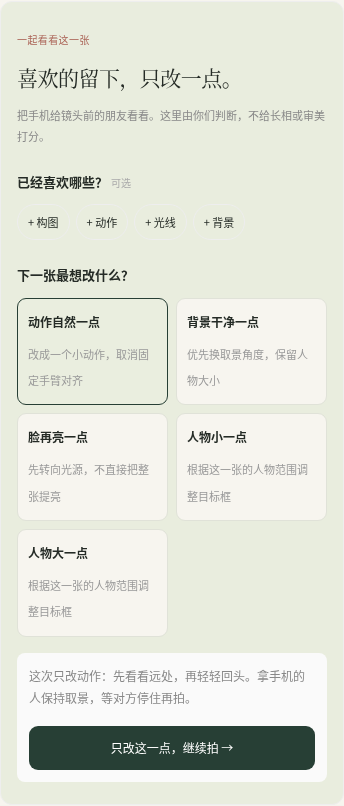
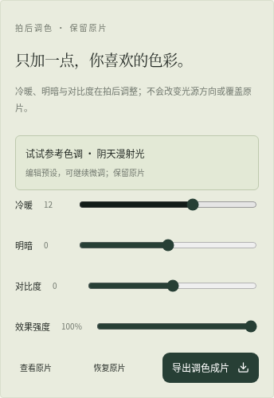
「微调一下颜色」在拍后使用。效果另存，原片一直保留；调色不会改变真实光源的方向。
「我的拍摄」最多保存 12 次，只在当前浏览器里。换设备、隐私模式或清理网站数据后可能找不回。重要原片一定要单独导出。
每次保存一张明确选中的结果，后续保存会更新同一记录。最近 6 张只在本次打开的页面里；本地记录中的照片会缩小到长边最多 1600px。
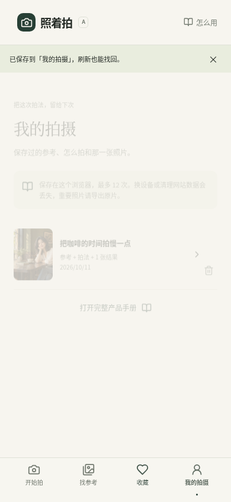
从 HTTPS 体验网址打开，允许相机权限。电脑没摄像头时，可以换手机打开。相机被视频会议占用时，先关闭占用它的应用，再点「重试相机」。
产品要从体验网址运行，不能只双击电脑里的 HTML。上传时需要包含 images、models、vision、assets 的整个文件夹。完整手册可以直接读 PDF。
点「调整人物范围」，框住照片中可见的人，再确认。可以继续学构图；手臂动作需要可靠检测，不会凭空画出动作。
AI 分析需要已配置的服务。你可以点「不发送，我自己选站位」继续；也可以看内置示例。自己的照片不会被套上示例分析结果。
检查人物是否还在画面里，有没有其他人进入，手臂是否被遮挡。离开页面后相机会暂停，回来点「继续拍摄」。还没准备好，也可以手动拍一张。
先导出重要原片。如果已经有 12 条记录，到「我的拍摄」删除一条再保存。删除只影响浏览器里的记录，不影响已经下载的照片。
本手册截图来自照着拍 v0.6 双版本。场景示例为原创 AI 素材；画作使用原图；相机和结果页使用测试画面展示交互。2026 年 10 月。